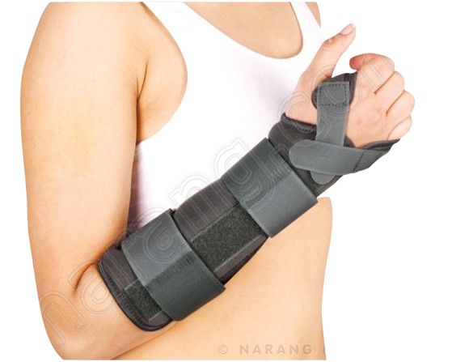

A simple fracture is a clean bone break that doesn’t pierce the skin, often caused by falling debris during earthquakes.
First Aid Steps:
Keep the limb still and do not try to straighten it. Use a splint (like a stick or rolled paper) to stabilize, tying it gently. Apply a cold pack wrapped in cloth to reduce swelling.
Watch for swelling, bruising, or limited movement. If signs of shock appear, help the person lie down and stay calm.
All fractures require medical care. Avoid giving food or drink in case surgery is needed. Call emergency services or go to the hospital immediately.
Seek medical help if pain, swelling, or deformity is severe.
 Back